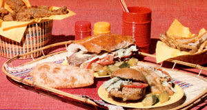

Adopting A more healthful diet isn't always especially when there youngsters in the family. However, you can make the transition more gradual if you prepare some...
Although recent studies have attempted to prove that "fast foods" can occasionally provide nutritious substitutes for home-cooked meals, it's a fact that-regardless of the synthetic vitamins that are sometimes packed into the commercial products the "convenience" meals are likely injected with any number of not-so-healthful chemical additives and preservatives. Unfortunately, a good many folks (especially young'uns) have been literally brought up on such fare and have an acquired taste for it (even if their families have since "converted" to unprocessed food diets).
However, you can wean your children (or yourself) from such "junk foods" as readymade burgers, fries, and tacos by simply preparing some nutritious "fast food" . . . right in your own kitchen. The homemade goodies will be crammed with nutrition, they'll cost less than the storebought varieties, and-best of all-you'll know exactly what goes into them.
I started experimenting with "alternative" fast food when I decided to put our hyperactive son on a diet that allowed no white sugar, no preservatives, and no food coloring. To vary the boy's meals and satisfy his longings for the "standards" he loves (but which contain the very chemicals that seem to trigger spells of bad behavior), I devised several recipes, based on nutritious whole foods, that wouldn't aggravate his condition. Now he can down one of my homemade "Big Macs" (and all the trimmings) without suffering any ill effects . . . and, as a bonus, our whole family is able to resist "the lure of the Golden Arches".
NON-HAMBURGERS
You may be surprised to know that burgers don't have to be made of good old U.S. Grade A char-broiled beef to satisfy a hearty appetite. In fact, you can whip up delicious patties from soybeans. The protein-packed beans can be used either cooked or sprouted to make a burger filling that should appeal to the most confirmed fast-food fanatic.
Soybeans do take a long time to cook, but they don't need much tending to. Simply soak 1 cup of the legumes, overnight, in enough water to cover them. On the following morning, cover the pan and boil the beans (in the same water) for about three hours. After they're cooked and thoroughly tender, let the "beef to be" cool down a bit . . . then drain off whatever water is left (save it for your soup pot), mash the beans, and mix in about 1/2 cup of uncooked oats. Flatten the mixture into thick patties (the recipe will produce four to six, depending on size) and the burgers will be ready to fry in a tablespoon or two of hot oil.
You can also make sprouted burgers (which offer even more nutrients than do those made with ungerminated beans, since the shoots are bursting with vitamins and minerals) by first sprouting 1/2 cup of soybeans together with 1 cup of pinto beans. After 3 or 4 days, simmer them in water (to cover) until they're tender (it'll take about 15 minutes). Then chop up the cooked sprouted beans and combine them with 2 eggs, 1/4 cup of milk, and 1-1/2 cups of bread crumbs. Shape the mixture into four or five patties, roll each one in whole wheat flour, and fry them in vegetable oil.
As still another nutritious alternative, you might like to fix rice and vegetable burgers. To do so, simply combine 3 cups of cooked brown rice (see the instructions in the recipe for taco filling that follows), 3 grated carrots, half a bunch of chopped parsley, 1 large minced onion, 1 clove of garlic (crushed), 1 egg, and 1/2 cup of whole wheat flour . . . and stir the mixture well. Season the fixin's to taste, form the patties (this recipe, too, should produce four or five burgers), and brown each of them on both sides.
Of course, once you've created your delicious and healthful sandwich fillers, you certainly won't want to serve them on any old bread . . . so here's how to make your own whole wheat hamburger buns. First, dissolve 2 tablespoons of active dry yeast in 1/2 cup of lukewarm water. Stir in 1 tablespoon of honey, and set the liquid aside. Then, in a medium saucepan, scald 1 cup of milk and let it cool to a lukewarm temperature before adding 1/3 cup of oil, 1/3 cup of raw sugar, and 2 teaspoons of sea salt. Stir the mix into the softened yeast. Next, beat in 2 eggs and enough whole wheat flour to make a nice soft dough (you'll probably need about 4 or 4-1/2 cups). When all the ingredients are well blended, cover the bowl before refrigerating it overnight.
Two hours prior to the following day's dinnertime, remove the bowl from the icebox . . . and let it stand at room temperature for 30 minutes. Then knead the dough for a short while (until it becomes fairly elastic) and pinch off pieces about the size of a large chicken egg. Flatten each one into a round bun shape and place it on a greased cookie sheet to rise for about half an hour. (If you want to make the buns look really authentic, brush the top of each one with a little egg white, and sprinkle the "painted" area with sesame seeds.) Bake the bread at 375°F for 15 to 20 minutes . . . and you'll end up with two dozen scrumptious rolls.
When you're ready to serve your soybean or vegetable burgers, split the buns open and spread them with a mixture of 1/2 cup of real mayonnaise, 1/4 cup of prepared mustard, and 1/4 cup of ketchup. (If you want to avoid sugar-which is often a prominent ingredient in these condimentsyou can find honey-based brands at almost any health food store.) Finally, slap a homemade patty on each bun, top the burger with a slab of cheese, an onion ring or two, a tomato slice, several pickle strips, and some shredded lettuce . . . and succumb to a Big Mac attack, naturally!
TACOS WITH A DIFFERENCE
A lot of folks in the southwestern states patronize their local taco stands as often as-if not more frequently than!-they visit hamburger restaurants. If you're a fan of Mexican food, you'll be glad to know that you can easily produce south-of-the-border delicacies with your own fresh (and often homegrown) ingredients. A nutritious filling for make-'em-yourself tacos starts with well-cooked brown rice.
The secret of getting the little kernels to come out nice and tender (rather than hard as pebbles) is patience! First, bring 2 cups of water to a full boil, and then gradually pour in 1 cup of unwashed brown rice. (Be sure to do this so slowly that the liquid never stops boiling.) Lower the heat, cover the pot tightly, and let the rice cook for about 45 minutes . . . or until all the water is absorbed by the grains.
While the rice is simmering, fry up a combination of about 1 cup each of finely chopped onions and green peppers. (If your tastes run to really spicy foods, you may also want to add cayenne peppersor even the still hotter jalapenos-to taste.) Then stir those vegetables into the finished grain, along with a cup of cooked pinto beans. (The legumes will combine with the rice to create a complete protein.) With that done, throw in your seasonings: 1 crushed clove of garlic, 1 tablespoon of chili powder, 1 teaspoon of cumin, and a dash of salt. Stir this mixtureover low heat-for about five minutes, and then pile it into taco shells.
If you don't want to use the commercially packaged tortillas, you can make your own "Mexican sandwich bread", too ... preparing either a traditional maize flavor or a wheatbased variation. To make a batch of 18 corn tortillas, mix-in a large bowl-2 eggs, 2-1/2 cups of water, 1 cup of unbleached white flour, 1 cup of yellow cornmeal, and 1/2 teaspoon of salt. Drop the batter onto a hot, oiled griddle to form five-inch "pancakes". Fry the circles for about two minutes-without turning them over-and then set them out to dry on racks. While the tortillas are still soft, fold each one in half . . . keep it closed with a pair of tongs . . . and fry it in four cups of hot oil for five minutes or until it holds its shape.
To prepare wheat taco shells, first mix together two cups of whole wheat flour and 1/2 teaspoon of salt. Then stir in from 3/4 to 1 cup of water (use just enough to make a stiff dough). Knead the mound until it's smooth, then break it into one-inch balls (this recipe also makes about 18 tortillas) and roll each one into a large, thin sheet. Cook them on a greased griddle over low heat, turning each piece once or twice. Then, after folding them with tongs, fry the whole wheat tortillas in bubbling oil until they're firm. The process will take several minutes.
After the folded shells have become dry and crispy, spoon in your bean-and-rice stuffing . . . and top it off with shredded cheddar cheese, lettuce, tomatoes, and onions. Finally, pour taco sauce over the filling. (You can, as you probably have guessed, make your own spicy condiment: Simmer together 2 cups of tomato sauce, one tablespoon of honey, 2 teaspoons of chili powder, 2 teaspoons of garlic powder, 1/2 teaspoon each of salt and pepper and, again, hot peppers if you prefer fiery foods.) Ladle the hot sauce over the contents of your homemade tacos, and you'll have some of the best eating this side of Baja!
NOW THAT'S ITALIAN!
Submarines, hoagies, grinders, heroes, or poor boys: Whatever you call them, the long sandwiches are all pretty much alike. They're tasty, sure . . . but they are rather heavy on the sodium nitrate and other preservatives. Well, even confirmed carnivores can solve that dilemma (and still have meat in their subs) by making fresh cold cuts themselves!
Mix together 2-1/2 pounds of freshly ground hamburger, 1-1/2 cups of crushed cracker crumbs, 3 beaten eggs, 1/3 cup of heavy cream, 1 large grated onion, 1-1/2 tablespoons of salt, 1/2 teaspoon each of nutmeg and pepper, and 1/4 teaspoon each of thyme and allspice. (You can, of course, use other spices, peppers, or chopped olives, cheese. etc. to produce a variety of flavors.) When the mixture is well blended, divide it in half and shape each "blob" into a long, firm roll.
Then-on a large sheet of wax paperlay out half a pound of home-smoked (if you can get it) bacon slices . . . being sure their edges overlap. Place one of the meat rolls on top of the bacon, and then wrap the slices around the cylinder. Peel the paper away, and wrap the entire "sausage" in aluminum foil (twisting the ends tightly shut). Prepare the other roll of beef in the same way, and bake them both at 350°F for 1-1/2 hours. When you remove the packages from the oven, place them in a pan and punch several holes in the side of each wrapper to let any accumulated fat drain out. Then chill the rounds andwhen you're ready to put together a hero, hoagie, or submarine-just unwrap and slice your custom-made cold cuts.
To make long Italian bread for your sandwiches, first dissolve 1-1/2 packages of active dry yeast in two cups of warm water. Add a tablespoon of salt, another of raw sugar or honey, and five cups of unbleached white flour. Knead this mixture for about five minutes . . . then put it in a greased bowl, cover it, and let it rise for 1-1/2 hours. When the dough has doubled its bulk (more or less), punch the mass down and shape it into two long, skinny loaves. Place the bread on a cookie sheet, slash the top of each loaf, and brush them both lightly with a mixture of 1 egg white and 1 tablespoon of water . . . then put the bread in a cold oven, turn the temperature to 400°F, and bake it for 30 to 40 minutes.
When the crusts are golden brown on top, remove the pan from the oven ... slice each loaf in half lengthwise . . . and let your "customers" build their own creations with layers of cold cuts, provolone cheese, sliced tomato, dill pickle, shredded onion, green pepper, etc. Season the sandwiches with salt and pepper . . . then drizzle a dressing-made from 1/2 cup of oil, 3 tablespoons of vinegar, and 1/2 teaspoon of oregano-over the filling.
KENTUCKY "SLY" CHICKEN
You can provide the Colonel with some competition by trying this homemade imitation of his secret recipe. First, cut up a whole chicken and dip the frying parts into a mixture of one egg and 1/2 cup of milk. Then, roll each piece in a combination of 1 cup of flour, 1/4 cup of cornmeal, 1/2 teaspoon of baking powder, 1/4 teaspoon of garlic powder, 1/4 teaspoon of paprika, 1/4 teaspoon of basil, and a dash of salt and pepper. Deep-fry the coated parts for 20 to 30 minutes. Next, arrange them on racks placed over a roasting pan full of boiling water. Let the whole thing steam in a warm oven for 10 or 15 minutes, then let your hungry family go at a platter of crispy, golden-fried chicken . . . just like the "real thing".
THE TRIMMINGS
Fast-food cookery doesn't end with the main course, however. You can also produce a batch of delicious homemade French fries or fruit pies . . . similar to the ones sold in some convenience restaurants. To make up a few orders of shoestrings, wash several large potatoes (use one for each person) . . . and chop them into long, thin strips. (You can peel the potatoes before cutting them, but the fries will taste better-and provide more fiber and nutrients-if you cook them up in their skins.) Toss the raw spuds briefly in vegetable oil, and spread them over an ungreased cookie sheet. Bake them at 425°F for 10 minutes, then turn the oven down to 350°F for another 20 or 30 minutes. When the fries turn crispy and golden brown, sprinkle on sea salt and serve them with lots of ketchup!
Another fast-food favorite is the hot apple turnover, and you can make a wholesome version of that dessert with just about any honey-sweetened fruit. First, make enough dough-using a standard whole wheat pastry recipe-for a doublecrust pie, roll it out to a thickness of 1/8 inch, and cut the sheet into small squares (depending on the size you prefer, you can probably make 8 or 10 from a single batch of dough). Pile sweetened fruit on half of the rectangles, sprinkle a little cinnamon on top, and then cover each one with another piece of pastry. Seal each minipie's edges by pressing its seams together with a fork, and prick a few air holes in the top. Fry the fruit tarts in deep hot oil for about three minutes, then let them drain and cool slightly. Be sure to serve them up while they're nice and warm, but be careful...the spicy innards will be hot!
From the recipes I've presented here, you can see that there's no need to run down to the local fast-food eatery (where what you get usually amounts to an overpriced dose of chemicals) every time the urge for a little edible self-indulgence hits. You can satisfy your cravings with better eats at home . . . spending a lot less money and swallowing fewer "mystery" additives. So the next time someone in your household comes down with a case of the munchies, don't take off for the nearest burger, chicken, or taco stand . . . head for your own kitchen instead!
|
 |
|
|